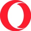

Home-grown model
In service
 Mistral AILe Chat · Large 3 · Small 4
Mistral AILe Chat · Large 3 · Small 4
Alexa+Mistral powers the French of Amazon's assistant in France
Mistral AI: world-class open-weight models with the consumer interface Le Chat / Vibe — which also embeds Z.ai's GLM models. Mistral powers the French of Amazon's Alexa+ and its weights also feed third parties like Bielik in Poland.
from scratch · vertical interface
Home-grown model
In service
- Black Forest LabsFlux, open-source images
- Aleph AlphaPhariaAI, sovereign AI
- OXOpenGPT-XTeuken-7B
24EU languages covered by Teuken-7B
Aleph Alpha (Heidelberg): the sovereign platform PhariaAI — data under exclusive German jurisdiction, deployed in federal ministries; merged with Canada's Cohere. Teuken-7B (public consortium OpenGPT-X) covers all 24 EU languages, though federal funding stopped in early 2025. Black Forest Labs (Freiburg): Flux, the open-source image generator used worldwide.
sovereignty · open-source images
Home-grown model
Research ++ / sovereignty in progress
- Google DeepMindLondon lab, owned by Google
- Stability AIStable Diffusion
- USUK Sovereign AIstate programme
×20public compute targeted by 2030 (21 → 420 exaFLOPS)
DeepMind (London): a world-class research lab, but owned by Google. The UK Sovereign AI programme (under construction) backs 11 startups and targets a 20x AI Research Resource by 2030, with AI Growth Zones. Stability AI: the historic pioneer of open models (Stable Diffusion), now weakened.
global research · state programmes
Home-grown model
In service
- AApertusSwiss AI Initiative · EPFL · ETH Zurich
100 %public: open weights, code and training data
Apertus: a fully public, open-source LLM (Apache 2.0) launched by the Swiss AI Initiative (EPFL, ETH Zurich, Swiss National Supercomputing Centre). Multilingual, transparent training data.
from scratch · public good
Home-grown model
In service
- SASilo AI (AMD)Poro · Viking
- TTurkuNLPUniversity of Turku
4 096AMD GPUs on the European LUMI supercomputer
Silo AI: the open Poro then Viking families, the first LLMs dedicated to Nordic languages, trained on the European LUMI supercomputer with the University of Turku. Acquired by AMD, Silo AI is now its AI lab.
linguistic grounding · supercomputing
Interface & hosting
In service

Operabrowser with Aria AI
150local LLMs usable inside the browser
No major Norwegian LLM — but Opera (Oslo) pursues an interface strategy: the Aria AI built on OpenAI and Google models, and the first browser to support 150 local LLMs running directly on the user's machine.
interface without a model · local AI
Adaptation
In service
 SpeakLeashBielik, Mistral base
SpeakLeashBielik, Mistral base
11Bparameters: enough to beat far bigger models in Polish
Bielik (SpeakLeash foundation): a Mistral base deeply re-trained (1.5B / 4.5B / 11B) that beats much larger models in Polish. Compliant with EU copyright, maintained by its community. The textbook example of a complete value chain.
continued pre-training · community
Home-grown model
In service
Minerva: the national research LLM developed at Sapienza (Rome), funded by the European recovery plan (PNRR) as part of Italy's national AI strategy.
national research
 AnthropicClaude 5closed
AnthropicClaude 5closed GoogleGemini · Gemmaclosed + open
GoogleGemini · Gemmaclosed + open MetaMuse Spark · Llamaclosed + open
MetaMuse Spark · Llamaclosed + open xAIGrok 4.xclosed
xAIGrok 4.xclosed MicrosoftCopilot · MAI
MicrosoftCopilot · MAI NVIDIANemotronopen weights
NVIDIANemotronopen weights AmazonNova · Alexa+
AmazonNova · Alexa+ DeepSeek
DeepSeek Moonshot
Moonshot Z.ai
Z.ai MiniMax
MiniMax